October 2026
2026년 10월호 전체 기사 아카이브
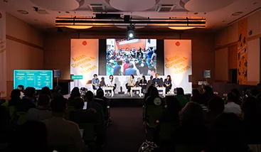
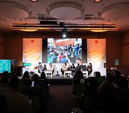
SPECIAL ② 2026.10.19
진실 기록 넘어 사회 변화로
한국형 ‘임팩트 다큐’ 생태계, 필요하다
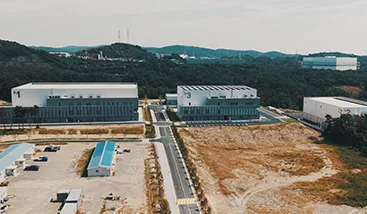
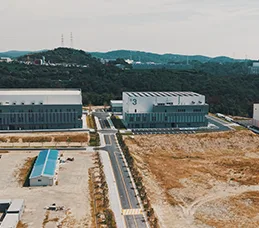
SPECIAL ① 2026.10.06
새로운 영화·영상 제작 거점으로의 출발
부산기장촬영소를 가다
INTERVIEW ② 2026.10.19
엉뚱하지만 파괴적인
<부활남: 더 레드> 정성호 무술감독
INTERVIEW ① 2026.10.06
인간다움과 인간다운 죽음에 대하여
<구제역에서 살아 돌아온 돼지> 故 허범욱 감독
CRITIC ② · YES or NO 2026.10.19
낙원 없이 살아가는 법
<실낙원>
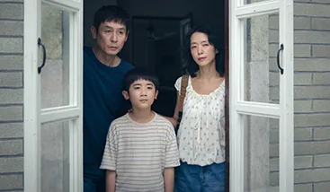
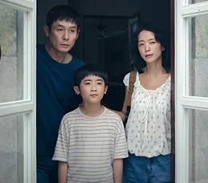
CRITIC ① 2026.10.06
미옥과 호석의 내일을 위한 시간
<가능한 사랑>
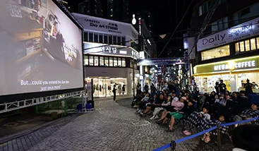

GLOBAL 2026.10.19
도시 전체와 호흡하는 축제로
커뮤니티비프와 동네방네비프

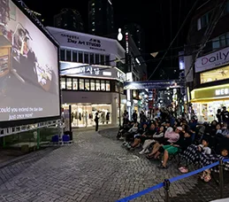
GLOBAL · ENG 2026.10.19
A Festival in Step with an Entire City
Community BIFF and BIFF Everywhere
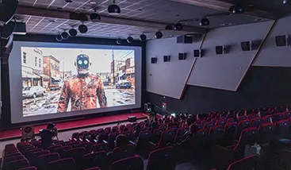
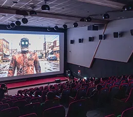
KOFIC STORY 2026.10.19
창작자, 어떤 판 위에서 놀게 할 것인가
2026 KOFIC AI 쇼케이스
BOX OFFICE 2026.11.03
10월 5주차 위클리 박스오피스
주간 흥행 순위 및 한국영화 관객 동향 리포트
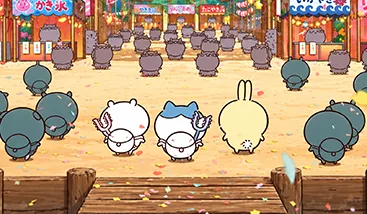
BOX OFFICE 2026.10.27
10월 4주차 위클리 박스오피스
주간 흥행 순위 및 한국영화 관객 동향 리포트
BOX OFFICE 2026.10.20
10월 3주차 위클리 박스오피스
주간 흥행 순위 및 한국영화 관객 동향 리포트
BOX OFFICE 2026.10.13
10월 2주차 위클리 박스오피스
주간 흥행 순위 및 한국영화 관객 동향 리포트
BOX OFFICE 2026.10.07
10월 1주차 위클리 박스오피스
주간 흥행 순위 및 한국영화 관객 동향 리포트
PRODUCTION 2026.10.13
9월 개봉작 살펴보기
2026. 9. 한국영화 제작상황판
조건에 해당하는 2026년 10월호 기사가 없습니다.